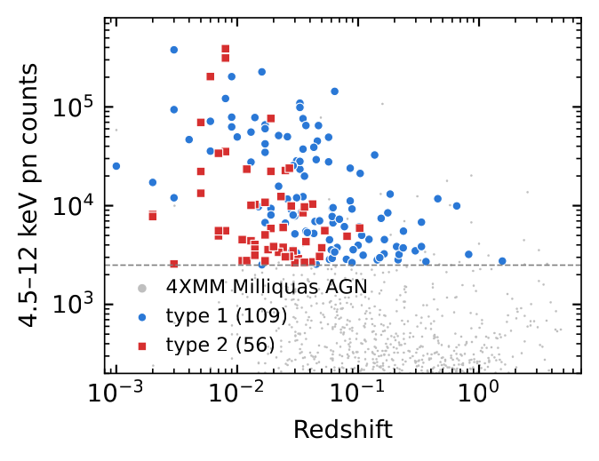
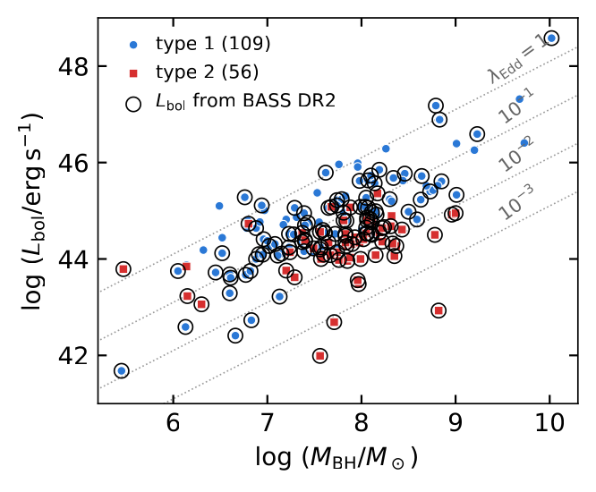
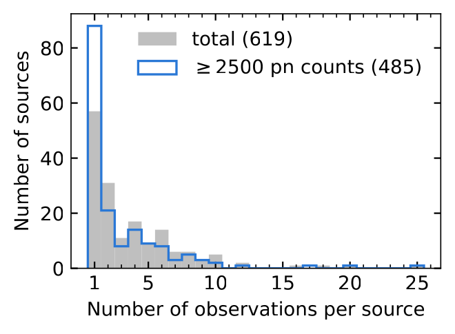

The sample
- Catalogue
- 4XMM-DR14 matched to Milliquas v8 (spectroscopic AGN classes, z > 0).
- Count limit
- At least 2500 EPIC-pn counts at 4.5–12 keV in the best usable observation of each source (pipeline-processed spectra, no pile-up, point-like, clean flags).
- Removed
- BL Lacs and radio-loud AGN, Compton-thick reflection-dominated sources (NGC 1068, Circinus), piled-up observations and sources with low signal-to-noise in the Fe K band.
- Result
- 165 AGN: the selected observation of each source plus 318 further observations of 77 of them, 483 spectra in total. Two of the 165 AGN are excluded from the line statistics, because their spectra cannot be described by our set of models: Mrk 1239, dominated by iron-rich, relativistically blurred reflection (Buhariwalla et al. 2024), and the changing-look AGN 1ES 1927+654, whose soft, rapidly variable spectrum reaches the upper limit of our photon index (Γ = 3). The UFO fractions therefore refer to 163 AGN.
- Properties
- Black hole masses from BASS DR2 or the literature; bolometric luminosities from BASS DR2 or from the absorption-corrected 2–10 keV luminosity. Full list: Sources, Observations.



Draft results, 2026-11-18. Companion site of The covering factor and duty cycle of ultra-fast outflows in local AGN: an AI-assisted census of the XMM-Newton archive, Lanzuisi et al., in preparation.